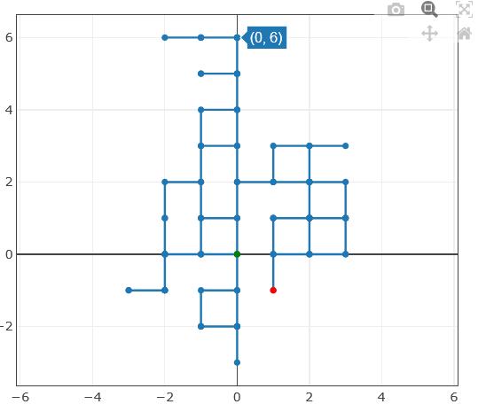
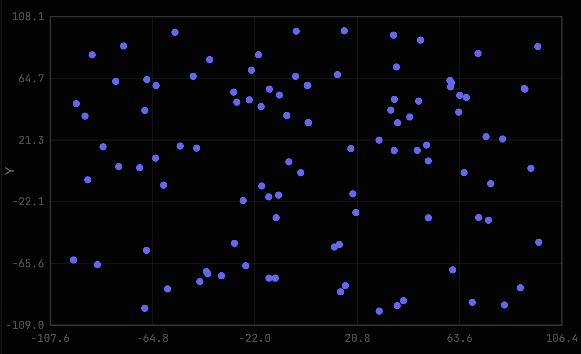
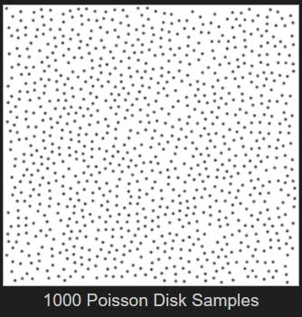

FPE:FaB - Map Generator
It was really time-consuming part, as I needed to foresee how map will need to manage space, to make sure, no section will overlap, also even what I'm gonna use to generate rooms, hallways or section doors. I also wanted to make the hallways wiggly at mediocre level, so that the player won't be playing the waiting simulator every 5 seconds to choose another path while not feeling endangered at all (as the monsters can't be faster than the player without rendering the game impossible most of the times)
First, I came with one of the easiest solution - the drunkard's walk algorithm (or just called Random Walk).

So I think you can already see some problems. Random Walk means really Random Walk, so the generator point can go any direction it wants, even coming back, or technically just go back and forth 50 times, just like this image also includes 50 moves (yeah, I also can't see that much).
Second problem is that is also too much wiggly, making the player now turn 10 times into every main direction before ever reaching the end of the hallway.
So this couldn't be the solution I wanted. That's why I started looking for other idea of random number generation. I started with generating random points on the map, that will be serving as both the rooms and empty walls.
The problem is, that the random points look like this:

They are complete and utter chaos.
It made me decide, that I need something more vaguely random. Something, that will generate points, that won't try to overlap each other. And guess what. Something like this really exists!
Here, you have Poisson Disc Sampling example:

Here you can see an enough widely spread points, so that every has enough space each.
It works by placing one point, and then generating other points around it on given distance, so that they mimic the idea of being fully randomly placed. They are, but better.
We are at the half of the story, and still no clue how to use the tools we have already at our hands. What we are gonna do now? Won't these point try exploding in our faces? Does this story even has a moral?
Most of these questions will be answered in the next article, as this is only the half of the map generation lore.